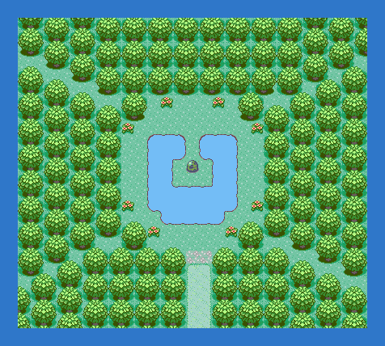

Walk to the Pokémon in the clearing. It is level 50 and holds a Soul Dew. Which one you meet depends on the colour you told MOM after the Hall of Fame: say RED and Latias roams Hoenn while Latios waits here; say BLUE and it is the other way round. The roaming one turns up in the wild on any route and flees, so bring a trapping move or a Master Ball for it.